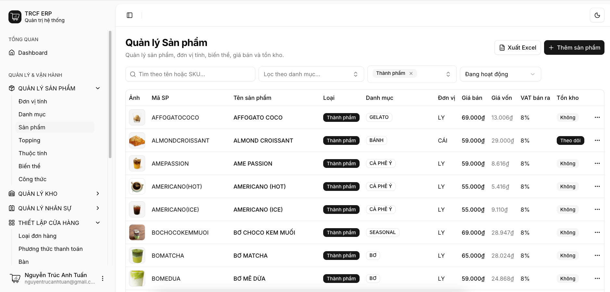
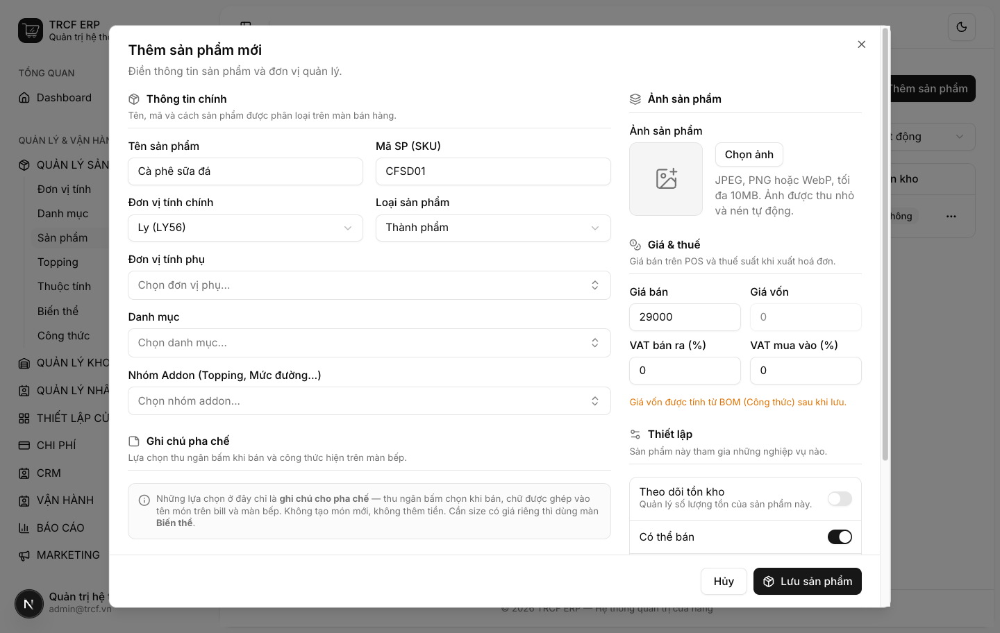
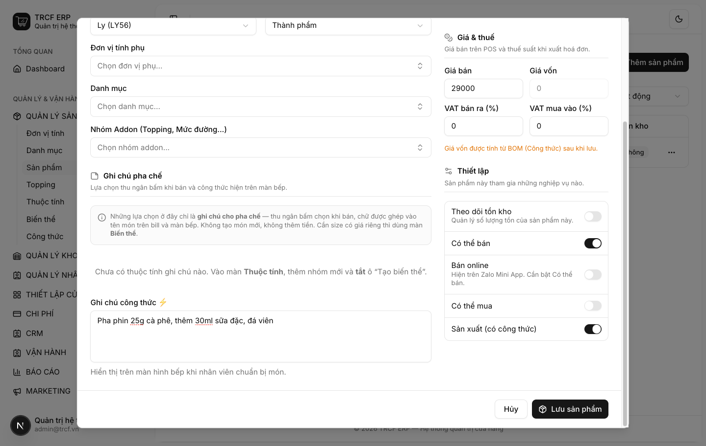
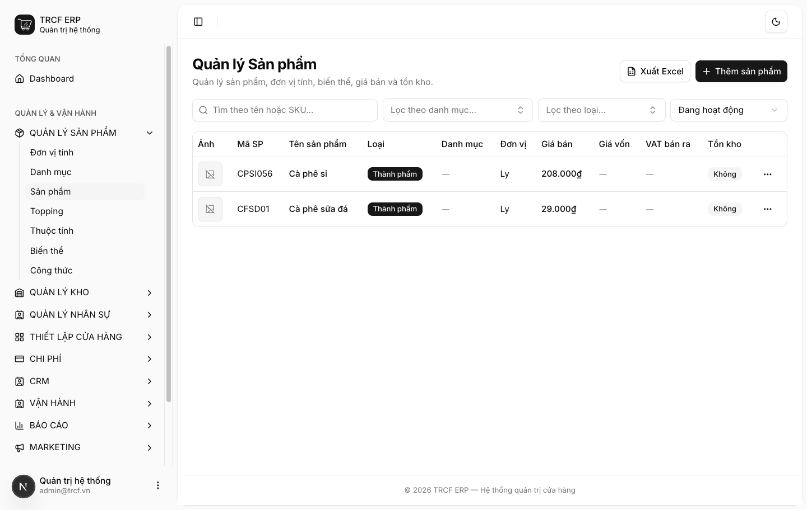

Bước 2 · Nhập sản phẩm
2.2 Thành phẩm
1. Đường dẫn vào chức năng
Menu trái: Quản lý sản phẩm → Sản phẩm → Thêm sản phẩm (địa chỉ /products).
2. Ví dụ nền và các bước thực hiện
Ví dụ: thêm món "Cà phê sữa đá".
- Mã SP: "CFSD01". Đơn vị: "Ly". Loại: "Thành phẩm".
- Giá bán: "29000".
- Bán cho khách, pha chế từ nguyên liệu: bật Có thể bán và Sản xuất.
Bước 1Mở trang Sản phẩm
- Bấm Quản lý sản phẩm ở menu trái.
- Chọn Sản phẩm.
- Bấm Thêm sản phẩm (góc phải trên).

Bước 2Khai thông tin chính và giá
- Tên sản phẩm: nhập "Cà phê sữa đá".
- Mã SP (SKU): nhập "CFSD01".
- Đơn vị tính chính: chọn "Ly".
- Loại sản phẩm: chọn "Thành phẩm".
- Danh mục: chọn danh mục đã tạo ở mục 2.1 (nếu có).
- Giá bán: nhập "29000".

Bước 3Gạt các công tắc
- Cuộn xuống khung Thiết lập (cột phải).
- Giữ Có thể bán: bật.
- Gạt Sản xuất (có công thức): bật.
- Để tắt: Theo dõi tồn kho, Bán online, Có thể mua.
- Ô Giá vốn xám lại: bình thường.
- Ghi chú công thức ⚡ (tuỳ chọn): nhập "Pha phin 25g cà phê, thêm 30ml sữa đặc, đá viên."

Bước 4Lưu và kiểm tra
- Bấm Lưu sản phẩm (nút luôn ở đáy khung).
- Sản phẩm xuất hiện trong danh sách.
- Kiểm tra mã, tên, loại, đơn vị, giá bán.

3. Giải thích các trường
Cột trái — Thông tin chính
| Trường | Điền gì | Bắt buộc |
|---|---|---|
| Tên sản phẩm | Tên hiện trên bill và màn bếp | ✅ |
| Mã SP (SKU) | Mã ngắn để tra cứu. VD CFSD01 | — |
| Đơn vị tính chính | Đơn vị tính tồn. Đồ uống: "Ly". Nguyên liệu: "Gram" | ✅ |
| Loại sản phẩm | Thành phẩm / Bán thành phẩm / Nguyên liệu → xem 2.3, 2.4 | — |
| Đơn vị tính phụ | Đơn vị khác dùng cho hàng này (nhập theo Kg, trừ theo Gram) | — |
| Danh mục | Một hoặc nhiều nhóm ở mục 2.1 | — |
| Nhóm Addon | Nhóm topping, mức đường hỏi khi bán món này | — |
| Ghi chú pha chế | Ô chọn (VD Đá: ít/nhiều). Thu ngân bấm khi bán, chữ ghép vào tên món. Không thêm tiền | — |
| Ghi chú công thức ⚡ | Văn bản tự do hiện trên màn bếp khi làm món | — |
Cột phải
| Trường | Điền gì |
|---|---|
| Ảnh sản phẩm | JPEG, PNG, WebP, tối đa 10MB. Hệ thống tự nén |
| Giá bán | Giá trên POS |
| Giá vốn | Giá nhập. Bị khoá nếu bật công tắc Sản xuất |
| VAT bán ra / VAT mua vào | Thuế suất (%) áp cho món |
Các công tắc — quyết định hành vi hệ thống
| Công tắc | Bật khi | Hệ quả |
|---|---|---|
| Theo dõi tồn kho | Hàng cần đếm tồn: nguyên liệu, bánh đóng gói | Hiện ở màn Tồn kho, bị cộng/trừ khi nhập, bán, huỷ |
| Có thể bán | Món bán cho khách | Hiện trên màn bán hàng |
| Bán online | Bán qua Zalo Mini App (cần bật Có thể bán) | Hiện trên Zalo Mini App |
| Có thể mua | Hàng mua từ nhà cung cấp | Chọn được trong phiếu nhập hàng |
| Sản xuất (có công thức) | Món pha chế từ nguyên liệu | Dùng được công thức; giá vốn bị khoá, do công thức tính |
Ba mẫu thường gặp
| Loại hàng | Tồn kho | Bán | Mua | Sản xuất |
|---|---|---|---|---|
| Cà phê sữa (món pha chế) | ❌ | ✅ | ❌ | ✅ |
| Cà phê hạt (nguyên liệu) | ✅ | ❌ | ✅ | ❌ |
| Bánh mua sẵn bán lại | ✅ | ✅ | ✅ | ❌ |
4. Lưu ý quan trọng
⚠️
Bật Sản xuất thì ô Giá vốn xám lại.
- Không phải lỗi.
- Giá vốn do công thức tính (mục 3.2).
⚠️
Tên và SKU không được trùng.
- Kể cả khác hoa thường.
- Kể cả với sản phẩm đã lưu trữ.
⚠️
Sản phẩm đã phát sinh thì không xoá được.
- Đã bán, đã nhập, tồn khác 0.
- Đang là nguyên liệu trong công thức, hoặc đang là topping.
- Ngừng bán: chọn Lưu trữ.
💡
Sản phẩm mới tạo, chưa bán, chưa nhập thì xoá thoải mái.